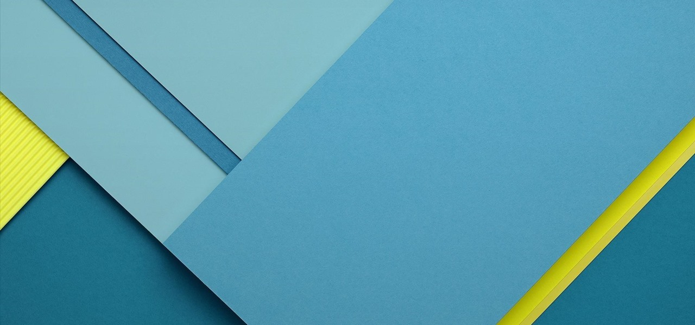

<ion-menu #menu [content]="content">
    <ion-header>
        
        
        <div class="dados-perfil">
            <ion-label><b>Geisson da silva</b></ion-label>
            <ion-label>geisonmsilva12@gmail.com</ion-label>
        </div>
    </ion-header>

    <ion-content>
        <ion-list inset no-lines>
            <button class="item-menu" (click)="openHome()" ion-item>
                <ion-icon name="home"></ion-icon>
                <span class="text-item-menu">Home</span>
            </button>
            
            <button (click)="openPersonagens()" class="item-menu" ion-item>
                <ion-icon name="person"></ion-icon>
                <span class="text-item-menu">Personagens</span>
            </button>

            <button (click)="openSobre()" class="item-menu" ion-item>
                <ion-icon name="information-circle"></ion-icon>
                <span class="text-item-menu">Sobre</span>
            </button>

            <button (click)="openConfiguracao()" class="item-menu" ion-item>
                <ion-icon name="settings"></ion-icon>
                <span class="text-item-menu">Configuracao</span>
            </button>
        </ion-list>
    </ion-content>

</ion-menu>

<!-- Disable swipe-to-go-back because it's poor UX to combine STGB with side menus -->
<ion-nav [root]="rootPage" #content swipeBackEnabled="false"></ion-nav>